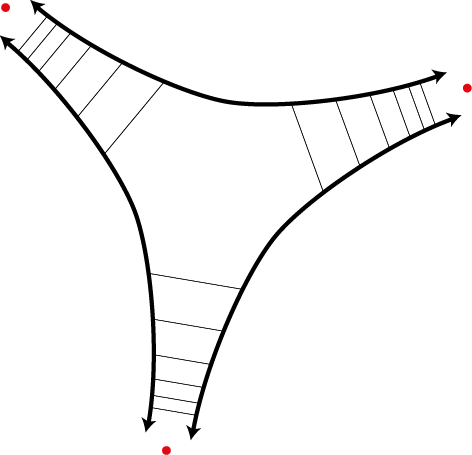

Current Projects
Multidimensional Income Mobility
Historically, income mobility is measured as some function of the change in income between two time periods for some population. Recently, approaches have been developed that take advantage of multi-period data. This project aims to study and develop higher-dimensional analogues of mobility indices in two time periods that are robust to measurement error and statistical noise.
See here for a presentation of initial results.
This project is in collaboration with my colleages at the Fiscal Research Center at Georgia State University.
Infinite Cycles and the Regress Problem

This project aims to bring the recent work of Diestel and collaborators on the topological approach to infinite cycles in graphs to bear on the program of Atkinson and Peijnenburg in analyzing the justification structure of infinite chains and infinite cycles of reasoning from a probabilistic and epistemological perspective.
A draft of initial results is forthcoming.
Formal Ethics and Cold War Rationality
To what extent does the work of moral philosophers in the 1960s-1980s such as David Gauthier and John Rawls fit into the Cold War Rationality Research Program?
Reliability of Black-box Model Prediction Explanations
What does it mean for an interpretation or explanation of a model prediction to be reliable or faithful? Within the context of tree based models where the estimated function is discontinuous or not differentiable, what are the consequences of approximating these models with simpler local continuous functions?